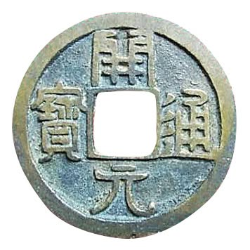

Sinosphere · · revised · Facebook post
One Coin, Four Readings: The Tang Dynasty's Multilingual Currency
- In 621 the Tang court issued a bronze coin inscribed 開元通寶.
- It travelled from the Silk Road oases to the Java Sea, and Japan modelled its first coins on it.
- Chinese, Japanese, Korean and Vietnamese read the same four characters in four different ways.

Contents
A coin that crossed civilizations
In 621 CE, the Tang court issued a new bronze coin inscribed with four characters:
開元通寶
The name means roughly "circulating treasure of the new beginning".
開元 hailed the new dynasty. It was not a reign title: the famous Kaiyuan reign of Emperor Xuanzong began only in 713, almost a century later.
The coin was cast for almost three centuries, and it became one of the most widely travelled coins in Asian history.
Sogdian mints in Samarkand copied its design. Xinjiang has yielded hoards of thousands. And strings of Kaiyuan coins went down with a ninth-century ship bound from China for the Middle East, wrecked off Belitung in the Java Sea.
Which way do you read it?
Look at the coin.
開 at the top
元 at the bottom
通 on the right
寶 on the left
Top, bottom, right, left: 開元通寶.
But even in China people disagreed about the order. Read around the square hole instead, and the legend comes out as 開通元寶.
That misreading was common enough to inspire the yuanbao names of later coins.
Four readings
The same written inscription circulated among communities that each gave it a local reading.
Mandarin: kāiyuán tōngbǎo
Japanese: kaigen tsūhō
Korean: 개원통보 (gaewon tongbo)
Vietnamese: khai nguyên thông bảo
Mandarin is the modern standard reading. The Tang court itself said something closer to khoj ngjwon thuwng pawX, in Baxter's Middle Chinese notation, where a final -X marks the rising tone.
The Japanese reading is mostly Kan-on (漢音), the layer of readings modelled on Tang Chinese. But 通 tsū is not the Kan-on tō. Dictionaries file it as Go-on (呉音) or as a kan'yō-on (慣用音), a "customary reading".
Japan had good reason to know this coin. Its own earliest coins, the Fuhonsen and then the Wadō kaichin of 708, were modelled on it, calligraphy and all.
The Korean reading is the Sino-Korean one, still used in numismatic literature today.
The Vietnamese reading is Sino-Vietnamese. It preserves features of late-Tang (8th–9th century) Chinese phonology that Mandarin later lost.
Listen to 元
The divergence is most audible in the second character, 元:
Mandarin: yuán
Japanese: gen
Korean: won
Vietnamese: nguyên
Middle Chinese (Baxter): ngjwon
The Tang syllable began with a velar nasal, ng-.
Vietnamese keeps the ng- intact.
Japanese keeps a trace of it as g-.
Mandarin has lost it entirely.
The borrowed readings froze, while Mandarin went on changing. So in this one respect, the Vietnamese form is closer to what a Tang official would have said than the reading heard in China today.
The passport and the accent
From a temple pagoda site in Japan's Nara Prefecture to the oases of the Silk Road and the seabed of the Java Sea, the coins all bear the same inscription.
Four characters. Four readings. One coin.
The characters were the passport; the pronunciation was the local accent.
Sources
- Peng Xinwei, A Monetary History of China 中国货币史 (Shanghai People's Press, 1965)
- Edward Schafer, The Golden Peaches of Samarkand (University of California Press, 1963)
- Nara National Museum, Kaiyuan Tongbao 開元通宝 excavated at the 霊安寺 pagoda site, Nara Prefecture